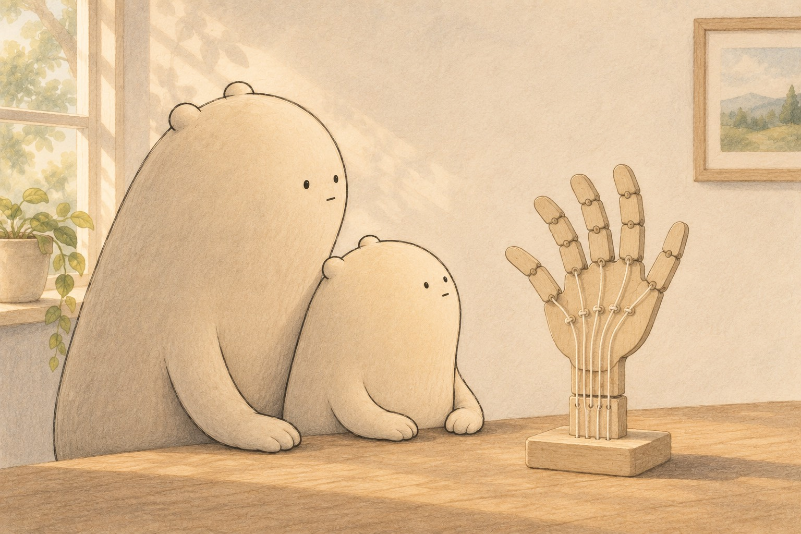
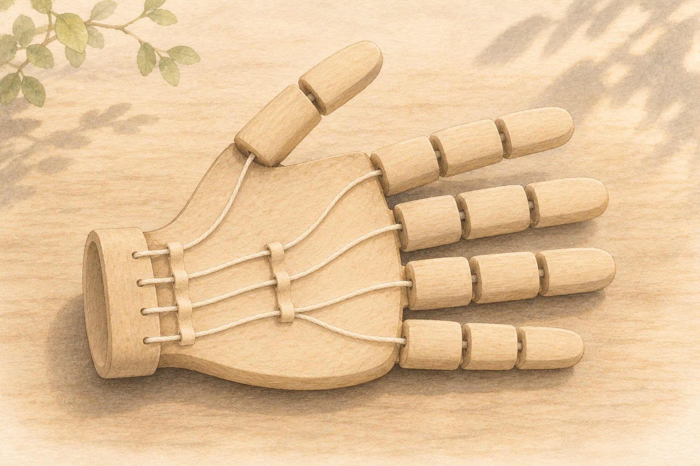
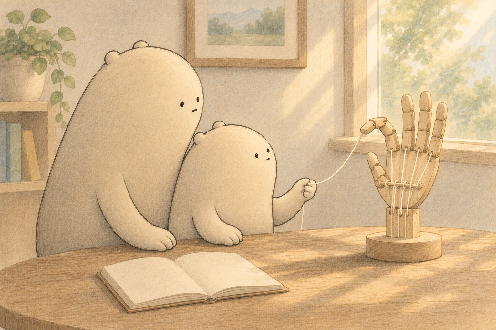
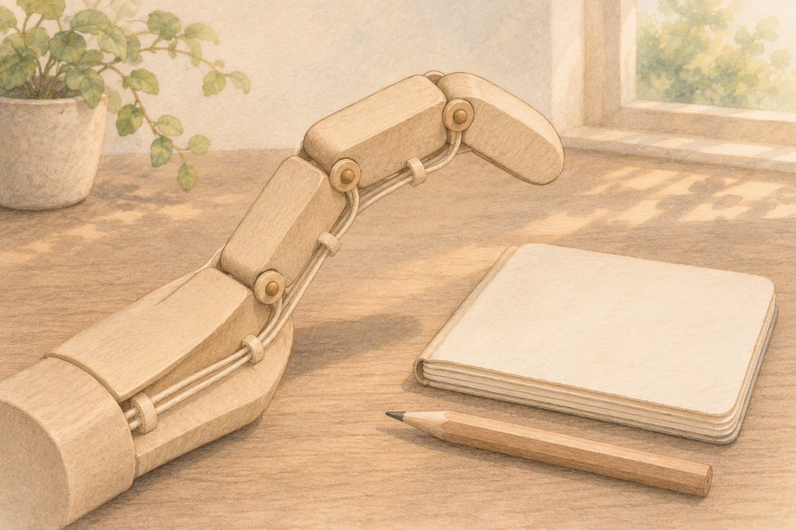

How do bones, tendons and joints work together to curl and open a hand?

Where shall we look?

Stiff pieces in a row, like the bones in a finger.
What keeps a finger stiff?
Find the short stiff pieces in each toy finger, and count them.
A little explanation & something to try
Bones. Each finger has three small bones in a row, and the thumb has two. Counting the wrist and palm, one hand has 27 bones. Bones hold the shape, but they cannot move by themselves.
Try this. Gently press along one of your fingers and count the hard parts between the bends. Count the stiff pieces on one toy finger too. Do the two numbers match?
Pull a string, and one finger curls.
What pulls a finger closed?
Find the thin string that runs along the palm side of a curled toy finger.
A little explanation & something to try
In the toy, a string. In your hand, a tendon: a tough cord that joins a muscle to a bone. Muscles in your forearm pull long tendons that reach into each finger, and tough loops along the finger hold them close, like the toy's guides.
Try this. Draw around your hand on paper to make an outline. Pull one toy string slowly and watch which finger curls. Draw a line from that string to the same finger on your outline. Do the same for every string, one at a time.

Trace each string to the finger it curls.
Does your hand work like the toy?
Watch where the toy finger bends, then watch your own finger bend.
A little explanation & something to try
Both follow one plan: a pull, a string, and joints that bend. Your finger bends at three joints, mostly one way, like a door hinge. The muscles that curl your fingers sit mostly in your forearm, so you can feel them move there.
Try this. Curl your pointer finger slowly and count the places it bends. Curl the toy's pointer finger and compare. Rest your other hand on your forearm and wiggle your fingers. What do you feel move?
Something has to pull the finger open again.
What opens the hand again?
Look at the back of the toy hand for elastic, a spring, or a second string.
A little explanation & something to try
A muscle can only pull, never push. So a second set of tendons runs along the back of each finger and pulls it straight. Many toys use an elastic cord or a spring instead. Some tendons on the back of your hand are linked, which is why one finger can be hard to lift alone.
Try this. Let go of a toy string and watch whether the finger springs back. Look for what pulls it open. Then lay your hand flat, fold your middle finger under, and gently try to lift your ring finger.
Count by hands
Look for the step between numbers. Fill each missing number.

Three bend points, like the joints in a finger.
Choose one pattern and tell how you know the missing number fits.
1.Little Wonderer counts fingers by fives, one hand at a time. What number comes next?
5, 10, 15, ___
A small hint
Count forward by 5 each time.
2.Each thumb has 2 bones. Big Wonderer counts thumb bones by twos. What comes next?
4, 6, 8, ___
A small hint
Count forward by 2 each time.
3.Two hands have 10 fingertips. They count fingertips by tens. What comes next?
30, 40, 50, ___
A small hint
Count forward by 10 each time.
4.The little one counts string pulls in twos. What number is missing?
12, 14, ___, 18
A small hint
Add 2 to the number before the blank.
5.They trace 5 strings on each hand outline. What number is missing?
25, ___, 35, 40
A small hint
Add 5 to the number before the blank.
6.A jar holds elastic cords in bundles of 10. What number is missing?
50, 60, ___, 80
A small hint
Add 10 to the number before the blank.
A toy hand, then a real one
How a Hand Works
A hand on strings
Little Wonderer sets a mechanical hand toy on the table. Its fingers stand open, and five thin strings hang from the wrist. Big Wonderer leans in beside the little one. Your own hand can curl and open without any strings you can see. What is hiding inside it that works like the toy?
What does the toy have that a real hand seems to be missing?
Bones in a row
Each toy finger is a row of short, stiff pieces. A real finger is built the same way, with three small bones in a line. The thumb has two. Counting the wrist and palm, one hand holds 27 bones. Bones are hard, so they keep a finger's shape, but they cannot move on their own.
How many bones are in one finger, and how many in the thumb?
A string pulls
Pull one string, and one toy finger curls toward the palm. The string runs through small loops that keep it close to the finger. Your hand has strings too, called tendons. Muscles up in your forearm pull those tendons, and the tendons pull the finger bones. Tough loops along each finger hold the tendons close, just like the toy's loops.
What does a tendon do when a forearm muscle pulls it?
Where fingers bend
The toy finger bends in three places, and so does yours. Those bend points are joints, where two bones meet. Most finger joints work like a hinge on a door, folding mostly one way. The thumb's base joint is different. It lets the thumb swing across the palm to touch each fingertip.
Why do most finger joints fold only one way?
String to finger
They pull each string, one at a time, and draw a line from string to finger. The little one curls a real finger slowly and feels the forearm with the other hand. Something moves under the skin near the wrist. The toy and the hand follow the same plan: a pull, a string, and a joint that bends.
Why can you feel your forearm move when your fingers curl?
Opening again
Let go of a toy string, and something must open the finger again. A muscle can only pull, never push. So your hand has a second set of tendons along the back of each finger, pulling it straight. Toys may use an elastic cord or a second string. Why might one of your fingers be hard to lift by itself?